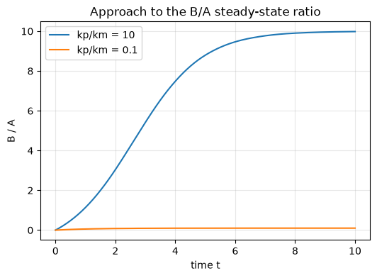
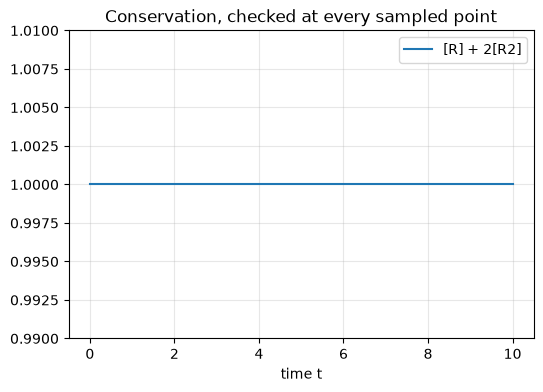

import numpy as np
import matplotlib.pyplot as plt
from scipy.integrate import solve_ivp
def reversible(t, y, kp, km):
A, B = y
dA = -kp * A + km * B
dB = kp * A - km * B
return [dA, dB]
def dimerisation(t, y, f, b):
R, R2 = y
dR = -2 * f * R**2 + 2 * b * R2
dR2 = f * R**2 - b * R2
return [dR, dR2]Chemical Reaction Networks I — Instructor Solutions
Chemical Reaction Networks I — Instructor Solutions
This is the instructor answer key for the three exercises in notebooks/02_mass_action.ipynb. For each exercise it gives:
- a full derivation or worked reasoning (not just the answer),
- the completed code, runnable end-to-end, and
- teaching notes: what a fully-correct submission should show, common student mistakes, and a talking point/extension if there’s time.
Not for distribution to students before the exercise deadline. This notebook is excluded from the published Quarto site (see _quarto.yml’s !instructor/ render rule) but is still committed to the repo history like any other file.
Exercise 1: Extreme \(k_p/k_r\) Ratios
Derivation
At steady state, \(0=-k_pA_{ss}+k_rB_{ss} \Rightarrow B_{ss}/A_{ss}=k_p/k_r\) — the ratio depends only on the ratio of the rate constants, not their individual magnitudes, and not on the total mass \(A_0+B_0\) (the system is linear). The one thing that does depend on the individual magnitudes is how fast the system gets there: both species relax toward steady state with rate \(k_p+k_r\) (the single eigenvalue of this linear 2-state system), so t_eval has to cover several multiples of \(1/(k_p+k_r)\) regardless of which extreme ratio is being tested.
A0, B0 = 1.0, 0.0
t_eval = np.linspace(0, 10, 400)
cases = {"kp/km = 10": (0.8, 0.08), "kp/km = 0.1": (0.08, 0.8)}
fig, ax = plt.subplots(figsize=(6, 4))
for label, (kp, km) in cases.items():
sol = solve_ivp(reversible, (0, 10), [A0, B0], t_eval=t_eval, args=(kp, km))
A, B = sol.y
relax_time = 1 / (kp + km)
print(f"{label}: theory B/A={kp / km:.3f}, simulated B/A={B[-1] / A[-1]:.3f}, "
f"relaxation time 1/(kp+km)={relax_time:.2f} (t_eval spans "
f"{t_eval[-1] / relax_time:.1f}x that)")
ax.plot(sol.t, B / A, label=label)
ax.set_xlabel("time t")
ax.set_ylabel("B / A")
ax.set_title("Approach to the B/A steady-state ratio")
ax.legend()
ax.grid(alpha=0.3)
plt.show()kp/km = 10: theory B/A=10.000, simulated B/A=9.983, relaxation time 1/(kp+km)=1.14 (t_eval spans 8.8x that)
kp/km = 0.1: theory B/A=0.100, simulated B/A=0.100, relaxation time 1/(kp+km)=1.14 (t_eval spans 8.8x that)
Teaching notes
What a correct submission looks like: both simulated ratios match kp/km to at least 3 decimal places by \(t=10\), for either extreme.
Common mistakes:
- Swapping which rate constant is “large” — e.g. writing
kp, km = 0.08, 0.8while intendingkp/km=10— an easy mix-up since the label and the assignment order don’t visually correspond. The printedkp/kmcheck catches this immediately. - Picking a very small \(k_p+k_r\) (e.g. both rate constants near 0.01) without extending
t_evalaccordingly — the ratio hasn’t converged yet and looks “close but not quite right,” which reads like a subtle bug instead of insufficient integration time.
Extension, if there’s time: ask what the relaxation time \(1/(k_p+k_r)\) implies about picking rate constants for a fast reversible pre-equilibrium step inside a larger network (e.g. the E+S⇌ES step in enzyme kinetics) — it needs to be fast relative to the other timescales in the system, not fast in any absolute sense.
Exercise 2: Conservation Across the Whole Trajectory
Derivation
Stoichiometry gives the conservation law directly: each forward step consumes two \(R\) to produce one \(R_2\), so
\[ \frac{d}{dt}\big([R]+2[R_2]\big) = \big(-2f R^2+2bR_2\big) + 2\big(fR^2-bR_2\big) = 0 \]
identically, for every \(t\) — not just asymptotically. The exercise is really about how you check this: comparing only the first and last sample (as the base example does) can hide non-monotonic drift in between, especially if the solver’s default tolerances are loose. The full-trajectory check below uses a tight rtol/atol and reports the maximum deviation over every sampled point, which is the version of this check that would actually catch a solver-tolerance or mass-balance bug.
f, b = 0.5, 0.1
R0, R20 = 1.0, 0.0
t_eval = np.linspace(0, 10, 400)
sol = solve_ivp(dimerisation, (0, 10), [R0, R20], t_eval=t_eval, args=(f, b),
rtol=1e-10, atol=1e-12)
R, R2 = sol.y
conserved = R + 2 * R2
max_dev = np.max(np.abs(conserved - conserved[0]))
print(f"Conservation [R]+2[R2]: initial={conserved[0]:.6f}, "
f"max deviation over ALL {len(conserved)} sampled points = {max_dev:.2e}")
print(f"(start-vs-end only would have reported: {abs(conserved[-1] - conserved[0]):.2e})")
fig, ax = plt.subplots(figsize=(6, 4))
ax.plot(sol.t, conserved, label="[R] + 2[R2]")
ax.set_ylim(conserved[0] - 0.01, conserved[0] + 0.01)
ax.set_xlabel("time t")
ax.set_title("Conservation, checked at every sampled point")
ax.legend()
ax.grid(alpha=0.3)
plt.show()Conservation [R]+2[R2]: initial=1.000000, max deviation over ALL 400 sampled points = 6.66e-16
(start-vs-end only would have reported: 4.44e-16)
Teaching notes
What a correct submission looks like: max_dev at solver-tolerance floor (≲1e-8 with the tightened tolerances above), and — the actual point of the exercise — a check written as np.max(np.abs(conserved - conserved[0])) (or equivalent) over the whole array, not a two-point conserved[0] vs conserved[-1] comparison.
Common mistakes:
- Only checking start and end (mirroring the worked example literally) — passes trivially even if there’s a real, momentary mass-balance bug that happens to cancel out by the final timestep.
- Leaving
solve_ivpat its default (looser) tolerances and then treating the resulting ~1e-4-scale drift as evidence of a stoichiometry error, rather than a solver-precision artifact — worth showing the same run with default tolerances side-by-side if a student raises this.
Extension, if there’s time: ask what conserved quantity exists for a trimerization \(3R \rightleftharpoons R_3\) (answer: \([R]+3[R_3]\), same reasoning) to check the pattern generalizes rather than being memorized for the dimer case specifically.
Exercise 3: The Single-Molecule Concentration Scale
Derivation
One molecule in a volume \(V\) corresponds to a concentration of \(1/V\) molecules per liter; dividing by Avogadro’s number converts molecule count to moles, giving a molarity of
\[ c_1 = \frac{1}{N_A V}. \]
For \(V=10^{-15}\,\text{L}\) (1 femtoliter, roughly a bacterial cell’s volume) and \(N_A=6.022\times10^{23}\,\text{mol}^{-1}\), this comes out in the low-nanomolar range — worth computing exactly below rather than quoting from memory.
N_A = 6.022e23 # 1/mol
V = 1e-15 # L (1 femtoliter)
c1 = 1 / (N_A * V)
print(f"Concentration of a single molecule in {V:.0e} L: {c1:.3e} mol/L = {c1 * 1e9:.2f} nM")Concentration of a single molecule in 1e-15 L: 1.661e-09 mol/L = 1.66 nMTeaching notes
What a correct submission looks like: ≈1.66 nM, with units carried through explicitly (mol/L, then converted to nM) rather than a bare number.
Common mistakes:
- Forgetting the
Vin the formula must be in liters to match \(N_A\)’s mol\(^{-1}\) units (mixing up L with mL or with \(\mu\)m\(^3\) is the most common slip; \(1\,\text{fL} = 10^{-15}\,\text{L} = 1\,\mu\text{m}^3\) is worth writing on the board). - Missing the point of the exercise: this isn’t just unit-conversion practice — it’s the concentration scale at which “concentration” as a continuous quantity starts to break down, since it’s the scale of a single molecule.
Extension, if there’s time: connect to the reversible-reaction and dimerization simulations above — those assumed \([A],[B],[R],[R_2]\) are large enough (many molecules per cell volume) that treating them as continuous concentrations obeying smooth ODEs is valid. A transcription factor present at a handful of copies per cell sits right at this single-molecule scale, which is why gene-regulatory networks are often modeled with discrete, stochastic simulation (e.g. Gillespie’s algorithm) instead of the mass-action ODEs used here.
Grading rubric summary
| Exercise | Full marks requires | Partial credit for |
|---|---|---|
| 1. Extreme \(k_p/k_r\) | Both ratios simulated; printed kp/km check matches theory to ≥3 decimals for both |
Correct simulation, ratio checked only visually from the plot |
| 2. Full-trajectory conservation | Check computed over the whole array (max deviation), not just endpoints; tightened solver tolerance | Correct conservation law, but only start/end compared |
| 3. Single-molecule scale | Correct formula, correct unit handling, ≈1.66 nM reported | Correct arithmetic, units dropped or mixed up |
Reference: Ingalls, B. P. (2013). Mathematical Modeling in Systems Biology: An Introduction. MIT Press. Official PDF (with solutions): https://www.math.uwaterloo.ca/~bingalls/MMSB/MMSB_w_solutions.pdf